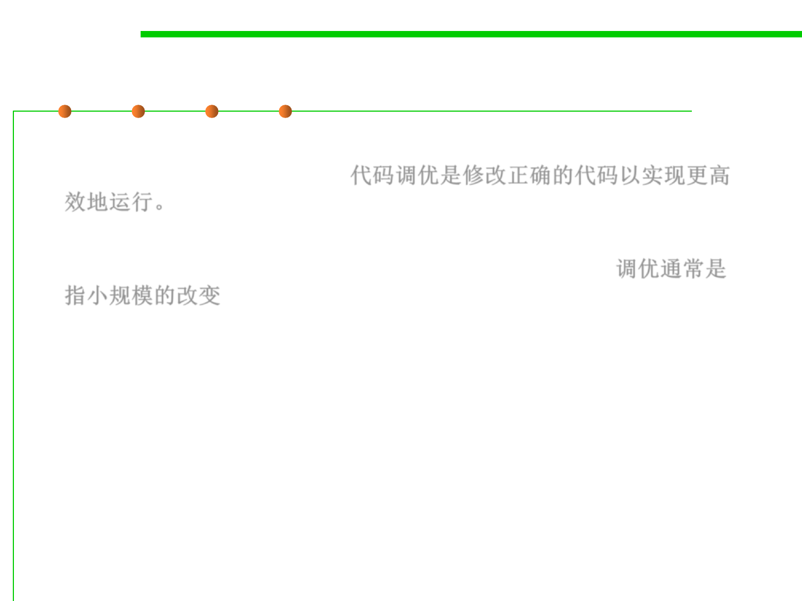

What is code tuning ?
8.3 Code Tuning for Performance Optimization
▪ Code tuning is the practice of modifying correct code in ways that
make it run more efficiently. 代码调优是修改正确的代码以实现更高
效地运行。
▪ “Tuning” refers to small-scale changes that affect a single class, a
single routine, or, more commonly, a few lines of code. 调优通常是
指小规模的改变
▪ “Tuning” does not refer to large-scale design changes, or other
higher-level means of improving performance.
▪ Performance: time and space complexity.